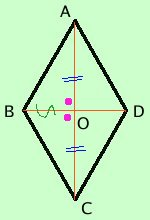

Teorema
in ogni rombo le diagonali sono perpendicolari
e viceversa
se in un parallelogramma le diagonali sono perpendicolari allora il parallelogramma e' un rombo
Dimostriamo il teorema inverso
teorema inverso
se in un parallelogramma le diagonali sono perpendicolari allora il parallelogramma e' un rombo
ipotesi
ABCD
parallelogramma
AOB^= BOC^= COD^= DOA^= |_
|
tesi
AB = BC = CD = DA
|

Dimostrazione
considero i triangoli AOB e BOCD;
essi hanno:
- AO = OC perche' in un parallelogramma la diagonale e' divisa a meta'
- AOB^= BOC^ per ipotesi
- il lato BO in comune
Quindi i due triangoli sono congruenti per il primo criterio di congruenza dei triangoli (due lati e un angolo) e quindi hanno congruenti tutti gli elementi, in particolare
AB = BC.
Posso ripetere il ragionamento per i triangoli
BOC e COD, poi posso anche ripeterlo per i triangoli
COD e DOA e quindi per la proprieta' transitiva della congruenza otterremo la tesi.
|